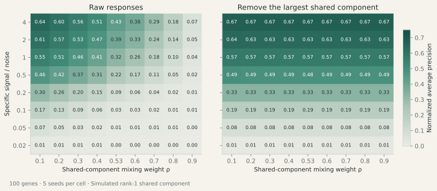

02 · Gene-network recovery
Which connections can be recovered from gene activity?
A gene regulatory network describes which genes influence others. Expression data measures their activity. Genes can respond together or affect each other indirectly, making direct connections hard to identify. Benchmarking frameworks such as BEELINE test inference methods against networks with known generating structure.
How standardizing gene expression affects the ranking
A linear model predicts the next gene-expression profile from the current one. The size of each fitted coefficient gives a score for a possible connection. Two simulated benchmarks, DREAM4 and BoolODE, supply known networks against which to check those scores.
Average precision is higher when true connections appear near the top of the ranking.

Five DREAM4 networks and 18 BoolODE datasets covering six network structures.
Each dataset contributes one average precision score per method. The lagged random forest uses a GENIE3-style regression.
On DREAM4, centering each gene and scaling it to unit standard deviation raised the linear model’s mean average precision from 0.370 to 0.584, moving it above the lagged random forest (0.536). On BoolODE the same change raised its score from 0.408 to 0.531, moving it above lagged LASSO (0.448).
The standardized fit improved on the raw fit in all five DREAM4 networks and in 15 of the 18 BoolODE datasets. The three exceptions were replicates of the same network structure.
Does the fit recover the direction of a connection?
A second fit reads each observation pair backward and scores its coefficients against the same directed network. DREAM4 follows the same simulated system over time. BoolODE orders different cells by pseudotime, and more than half of its adjacent pairs share the same recorded time.
| Benchmark | Average precision, forward | Average precision, backward |
|---|---|---|
| DREAM4 | 0.584 | 0.196 |
| BoolODE | 0.531 | 0.504 |
Consider two genes joined by a connection in only one direction. How often did the forward fit give the true direction a larger coefficient magnitude than the opposite direction? The average was 86% across the five DREAM4 networks and 53% across the 18 BoolODE datasets. Keeping only BoolODE pairs with increasing pseudotime raised that figure to 55%. Even with its lead on average precision, the model assigned the larger score to the wrong direction nearly half the time on BoolODE.
Forward and backward fits by dataset · How direction was scored
Removing a shared signal
The simulation adds one shared pattern of activity to the response of a known network. Removing the largest component tests whether a method can recover direct connections when this pattern obscures them. The grid varies the strength of the shared pattern and the amount of noise separately.
Each setting uses the same five simulated networks. The mixing weight controls the strength of the added rank-one component.

At a mixing weight of 0.7 and signal-to-noise ratio of 2, removal raised normalized average precision from 0.24 to 0.63.
Average precision is normalized to the network’s edge density. Zero is the density baseline and one is a perfect ranking.
From a response to a direct connection
The perturbation study addresses another ambiguity: a large change can arise from a direct connection, a stronger intervention, or an indirect path through other genes. It implements modular response analysis, introduced by Kholodenko et al. (2002), which uses self-responses to account for perturbation strengths.
In 30 simulated linear systems with all 40 genes observed and no measurement noise, the implementation recovers the known direct connections to numerical precision. Adding measurement noise reduced recovery in these controls, especially when genes used different measurement units. When genes are unobserved, an apparent connection can instead summarize an indirect path through a missing gene.
Measured response consistency
In measured RPE1 cells from Replogle et al. (2022), each half of the data gave a ranking of gene pairs. The two rankings agreed more closely for raw responses (Spearman correlation 0.345) than after modular response analysis (0.115). This measures repeatability across one split. Direct-edge accuracy would require an independent reference network.